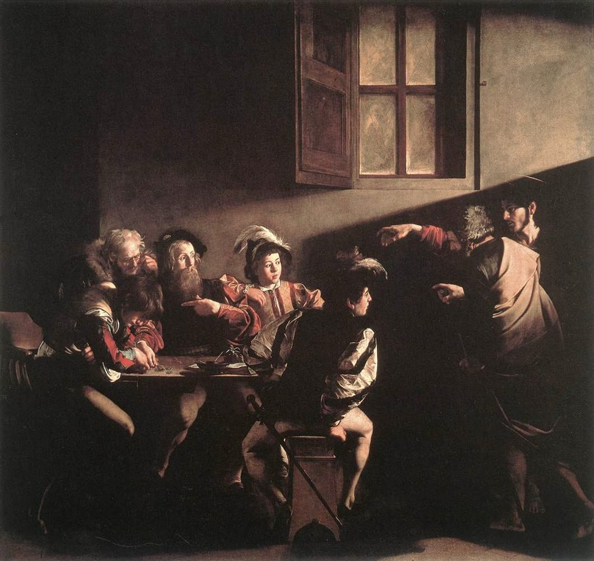

명암법 (Chiaroscuro)

쉽게 풀면
밝은 부분과 어두운 그림자를 강하게 대비시켜서, 평면 그림을 입체적이고 극적으로 보이게 만드는 기법이다.
왜 중요한가
명암법은 빛과 어둠의 대비로 입체감과 극적 효과를 만드는 기법으로, 레오나르도의 이론화와 카라바조의 극단화를 거쳐 바로크 회화의 핵심 언어가 되었다. 렘브란트, 라 투르, 벨라스케스 분석에서 필수이며, 영화의 필름 누아르 조명 연구에서도 같은 용어가 쓰인다. 뵐플린은 명암 중심의 조형을 회화적 양식의 특징으로 규정해 양식사 분석의 지표로 삼았다.
핵심 정리
- 키아로스쿠로(chiaroscuro)는 이탈리아어로 ‘밝음-어둠’이며, 미술에서 빛과 어둠의 강한 대비를 쓰는 것을 뜻한다. 미술사가들은 빛으로 3차원 부피를 빚는 기법을 가리키기도 한다.
- 이 말은 르네상스에서 유색 종이 위에 흰색으로 하이라이트를, 잉크나 물감으로 그림자를 올리는 소묘에서 시작했다. 같은 효과의 뿌리는 아폴로도로스와 연결되는 고대 그리스의 그림자 회화까지 거슬러 올라간다.
- 가장 극단적인 형태가 테네브리즘(tenebrism)으로, 그림자로 주제에 시선을 모은다. 카라바조는 한정된 단일 광원을 쓰는 테네브리즘을 발전시켰다.
- 17세기에 로제 드 필이 프랑스어 clair-obscur를 소개했다.
예시로 보기
미술사가 마르시아 홀은 키아로스쿠로를 칸지안테, 스푸마토, 우니오네와 함께 네 가지 정통 회화 양식으로 묶는다. 레오나르도 다 빈치와 라파엘로가 썼고, 뒤에 카라바조, 렘브란트, 베르메르, 고야, 조르주 드 라 투르가 이어진다. 루벤스, 아르테미시아 젠틸레스키, 위트레흐트 카라바조파는 카라바조의 영향을 받았다.
목판화에서는 여러 판으로 찍는 키아로스쿠로 목판화가 있고, 루카스 크라나흐와 한스 부르크마이어가 1508~1509년경 두 판 작품을 만든 것으로 알려지나 선후는 논쟁 중이다. 영화에서는 저조도 고대비 흑백 영화인 『칼리가리 박사의 밀실』과 『메트로폴리스』에 나타나고, 스탠리 큐브릭의 『배리 린든』(1975)은 일부 장면을 촛불만으로 촬영했다. 그레그 톨랜드의 기법은 필름 누아르와 연결된다.
자주 하는 오해
- “키아로스쿠로는 어두운 그림을 뜻한다.” 구도 전체의 대비와 형태에 부피를 주는 음영 처리 둘을 모두 가리킨다.
- “키아로스쿠로와 테네브리즘은 같은 말이다.” 테네브리즘은 키아로스쿠로의 가장 극단적인 형태이다.
- “카라바조가 명암법을 처음 발명했다.” 카라바조는 극단적 형태인 테네브리즘을 만든 인물로 흔히 꼽히지만 뒤러, 틴토레토, 엘 그레코도 비슷한 기법을 썼고, 명암법 자체는 르네상스 소묘와 고대 그리스 그림자 회화에 뿌리가 있다.
논문에서는 이렇게 쓰입니다
실제 논문에서
국내 학술지 논문에서 이 용어가 쓰인 문장을 그대로 옮겼다. 제목·학술지·연도와 원문 링크를 함께 적었다.
“원근법과 명암법은 회화에서 2차원의 평면(平面) 위에 3차원적인 시각상(視覺象)을 표현해주며 과학적 혁신으로 인정받았다.”
원근법과 명암법의 관념적 활용 사례 연구, 기초조형학연구, 2011 · KCI 한국학술지인용색인 · 원문 보기 ↗
“명암법 및 원근법을 적용한 불화로서 색채 채용에 있어서도 선홍색 계열 적색에 명도와 채도가 높은 녹청색을 채용하여 보색 대비를 보여주면서, 황색 계열 피부색과의 적절한 색 대비를 통해 조화로움을 이루어 내고 있는 불화로서 선원사 가 갖는 학술 자료적 의미가 크다고 하겠다.”
퇴운일섭(退耘日燮) 作 남원 선원사 의 표현기법 고찰, 동서미술문화학회 미술문화연구, 2023 · KCI 한국학술지인용색인 · 원문 보기 ↗
“본고는 투시도법에 유럽중심주의가 내재되어 있으며 명암법이 기독교 관념을 강조하고 있음을 통해 상관관계를 입증한다.”
서양화법과 식민주의, 동양예술, 2022 · KCI 한국학술지인용색인 · 원문 보기 ↗
조금 더 깊게 보면
명암법(chiaroscuro)과 테네브리즘은 구별된다. 전자는 입체감을 위한 명암의 점진적 이행을 포함하는 넓은 개념이고, 후자는 카라바조 계열의 극단적 어둠과 강한 스포트라이트를 가리킨다. 명암 목판화(chiaroscuro woodcut)는 같은 이름의 별개 판화 기법이다. 명암법은 광원의 물리적 일관성을 전제하지만 카라바조의 빛은 실제 광원으로 설명되지 않는 경우가 많아, 자연주의로만 읽으면 안 된다. 레오나르도는 '빛과 그림자에 관한 논고'에서 명암의 점진적 단계를 체계적으로 분류해, 이를 단순한 기법이 아니라 자연 관찰에 근거한 과학적 원리로 다뤘다.
주의할 점
명암법은 바로크의 극단적 형태인 테네브리즘과 자주 혼동되지만, 명암법은 훨씬 넓은 범위의 입체 표현 기법 전반을 가리키는 일반 용어이다.
명암법은 유화의 발명과 함께 정교해졌으며, 이는 프레스코처럼 빠르게 마르는 매체보다 점진적인 색조 이행을 반복해 덧칠할 수 있는 유화의 기술적 특성과 밀접히 연관된다. 따라서 명암법을 분석할 때는 단순히 '어둡고 밝다'는 인상만이 아니라, 빛이 형태를 따라 어떻게 단계적으로 변화하는지 그 이행의 정교함을 함께 살펴야 한다.
헷갈리기 쉬운 용어
참고 문헌
- Wikipedia contributors. (n.d.). Chiaroscuro. In Wikipedia, The Free Encyclopedia.
- Wikipedia contributors. (n.d.). Tenebrism. In Wikipedia, The Free Encyclopedia.